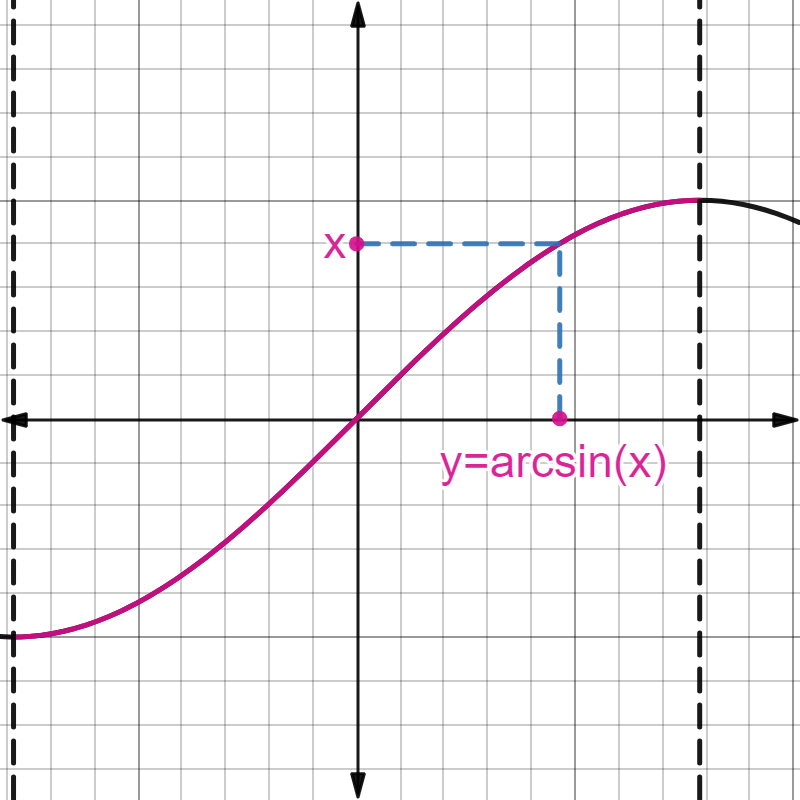

2.3. Funciones elementales#
Aquí tenéis el link con la documentación oficial de Sympy sobre funciones elementales.
2.3.1. Función valor absoluto#
Esta función se define mediante
import sympy as sp
x = sp.symbols('x', real=True)
p = sp.plot(sp.Abs(x), (x, -3, 3), show=False)
p[0].line_color='r'
p.xlabel='x'
p.ylabel='y'
p.legend=True
p.show()
Veamos las principales propiedades de esta función:
Property
Sean \(x,y\in\mathbb{R}\). Se verifica
\(|x|\geq 0\), \(\forall x\in\mathbb{R}\). Además, \(|x|=0\Longleftrightarrow x=0\),
\(-|x|\leq x\leq |x|\),
\(|x|\leq y\Longleftrightarrow -y\leq x\leq y\),
\(|x+y|\leq |x|+|y|\) (desigualdad triangular),
\(|x-y|\geq \big| |x|-|y|\big|\),
\(|xy|=|x||y|,\quad\) \(\displaystyle\left|\frac{x}{y}\right|=\frac{|x|}{|y|}\).
Destaquemos que el valor absoluto mide la distancia entre dos puntos de la recta real. Basta hacer el valor absoluto de su resta. Lo incluimos como una definición.
Definition (Distancia entre dos puntos)
Sean \(x\), \(y\in\mathbb{R}\). Definimos la distancia entre estos dos puntos como
Veamos algún ejercicio donde intervenga el valor absoluto. Antes de comenzarlos conviene recordar siempre que cuando nos enfrentemos a un valor absoluto debemos separar los distintos casos que se producen según el signo (positivo o negativo) del interior del valor absoluto.
2.3.1.1. Ejercicios:#
Primer ejercicio: Encontrar los puntos \(x\in\mathbb{R}\) tales que \(|x-2|<1\).
Respuesta:
Separamos dos casos.
Primer caso: \(x-2>0\Longleftrightarrow x>2\).
En este caso \(|x-2|=x-2\). Entonces,
\[ |x-2|<1\Longleftrightarrow x-2<1\Longleftrightarrow x<3. \]Uniendo las dos condiciones (\(x>2\) y \(x<3\)) resulta \(x\in(2,3)\).
Segundo caso: \(x-2\leq 0\Longleftrightarrow x\leq 2\).
En este caso \(|x-2|=2-x\) y, entonces,
\[ |x-2|<1\Longleftrightarrow 2-x<1\Longleftrightarrow x>1. \]Es decir, \(x\in(1,2]\).
Uniendo los dos casos obtenemos que \(|x-2|<1\Longleftrightarrow x\in(1,3)\), como podemos representar gráficamente:
p = sp.plot(sp.Abs(x-2), 1, (x, -1, 4), show=False)
p[0].line_color='r'
p[1].line_color='b'
p.xlabel='x'
p.ylabel='y'
p.legend=True
p.show()
Segundo ejercicio:
Encontrar los puntos \(x\in\mathbb{R}\) tales que \(|x-2|=|5x+1|\).
Separamos 4 casos.
\(x-2\geq 0\) (es decir, \(x\geq 2\)) y \(5x+1\geq 0\) (es decir, \(x\geq-\frac{1}{5}\)). Uniendo las dos expresiones este caso se reduce a \(x\geq 2\). La igualdad planteada resulta
\[ |x-2|=|5x+1|\Longleftrightarrow x-2=5x+1\Longleftrightarrow x=-\frac{3}{4}\not\geq 2. \]Por lo tanto, la igualdad en este caso es imposible.
\(x-2<0\) (es decir, \(x<2\)) y \(5x+1\geq 0\) (es decir, \(x\geq-\frac{1}{5}\)). Uniendo las dos expresiones este caso se reduce a \(x\in[-\frac{1}{5},2)\). La igualdad planteada resulta
\[ |x-2|=|5x+1|\Longleftrightarrow 2-x=5x+1\Longleftrightarrow x=\frac{1}{6}. \]Como \(\frac{1}{6}\in[-\frac{1}{5},2)\), ya tenemos una solución para nuestra igualdad.
\(x-2\geq 0\) (es decir, \(x\geq 2\)) y \(5x+1<0\) (es decir, \(x<-\frac{1}{5}\)). Uniendo las dos expresiones observamos que son incompatibles.
\(x-2<0\) (es decir, \(x<2\)) y \(5x+1< 0\) (es decir, \(x<-\frac{1}{5}\)). Uniendo las dos expresiones este caso se reduce a \(x<-\frac{1}{5}\). La igualdad planteada resulta
\[ |x-2|=|5x+1|\Longleftrightarrow 2-x=-5x-1\Longleftrightarrow x=-\frac{3}{4}. \]Como \(-\frac{3}{4}<-\frac{1}{5}\), ya hemos encontrado la segunda (y última) solución para nuestra igualdad.
p = sp.plot(sp.Abs(x-2), sp.Abs(5*x+1), (x, -1, 3), show=False)
p[0].line_color='r'
p[1].line_color='b'
p.xlabel='x'
p.ylabel='y'
p.legend=True
p.show()
2.3.2. Funciones polinómicas#
Son funciones del tipo
con \(a_0\), \(a_1\), …, \(a_n\in\mathbb{R}\), y \(a_n\not=0\). Diremos que el grado del polinomio es \(n\) y que su coeficiente principal es \(a_n\).
Ejemplos de polinomios son
\(p_1(x)=5x^3-4x+2\),
\(\displaystyle p_2(x)=8x^3-\sqrt{2}\),
\(p_3(x)=\pi x^4+2x^3-3x\).
El dominio de una función polinómica es siempre \(\mathbb{R}\), mientras que su imagen varía en cada caso.
2.3.3. Funciones racionales#
Son cocientes de funciones polinómicas, es decir,
Ejemplos de funciones racionales son
\(\displaystyle f_1(x)=\frac{5x^3-4x+2}{8x^3-\sqrt{2}}\),
\(\displaystyle f_2(x)=\frac{1}{x^3+2}\).
El dominio de estas funciones son todos los números reales, excepto aquéllos que anulen el denominador,
mientras que su imagen varía en cada caso.
2.3.4. Función exponencial#
Definition (Función exponencial)
Sea \(a>0\). Definimos la función exponencial de base \(a\) como
Un caso especial (y poco interesante) es cuando \(a=1\). En este caso \(f(x)=1^x\) es la función constantemente igual a \(1\).
Cuando \(a\not=1\), el comportamiento varía dependiendo de si \(a\) es mayor o menor que \(1\). En los dos casos se verifica que \(\mathrm{Dom}\, f=\mathbb{R}\), \(\mathrm{Im}\, f=(0,+\infty)\) y que \(f(0)=a^0=1\). Lo que cambia es
\(\boldsymbol{a<1}\). En este caso,
\(f(x)=a^x\) es una función estrictamente decreciente, \( x<y\Rightarrow a^x>a^y\),
\(\displaystyle\lim_{x\to-\infty}a^x=+\infty\),
\(\displaystyle\lim_{x\to+\infty}a^x=0\).
\(\boldsymbol{a>1}\). En este caso,
\(f(x)=a^x\) es una función estrictamente creciente, \(x<y\Rightarrow f(x)<f(y)\),
\(\displaystyle\lim_{x\to-\infty}a^x=0\),
\(\displaystyle\lim_{x\to+\infty}a^y=+\infty\).
Estas funciones son útiles, entre otras muchas cosas, para medir el crecimiento de una población o la desintegración de un compuesto radiactivo.
El caso más importante es la función \(f(x)=e^x\) (recordemos que \(e=2.7182818...\)). A esta función es a la que se suele conocer, por defecto, como función exponencial.
De hecho, en Sympy, sp.exp se refiere a la función exponencial con base \(e\). Si queremos tratar otra función de esta familia deberemos escribir a**x.
La propiedad que hace tan interesante la función \(f(x)=e^x\) es que su derivada en el origen vale exactamente \(1\), lo que simplifica muchos cálculos (por ejemplo, como veremos más adelante, los desarrollos de Taylor). Observemos que la derivada de \(2^{x}\) en el \(0\) vale, aproximadamente, \(0.7\), mientras que la derivada de \(3^{x}\) en el \(0\) vale, aproximadamente, \(1.1\), por lo que \(e\) debe estar entre \(2\) y \(3\).
Como curiosidad, el nombre de \(e\) se lo puso Euler. Él decía que venía de que la palabra exponencial empieza por \(e\)… cualidad que también cumple su apellido.
Algunas propiedades generales para la función exponencial y que es fundamental recordar y saber aplicar bien son
Property (Propiedades aritméticas de la exponencial)
\(a^{x+y}=a^x a^y,\qquad\forall x,y\in\mathbb{R}\),
\(\left(a^x\right)^y=a^{xy},\qquad\forall x,y\in\mathbb{R}\),
\(\displaystyle a^{-x}=\frac{1}{a^x}\qquad\forall x\in\mathbb{R}\) (consecuencia de la anterior propiedad).
p = sp.plot(sp.exp(x), 2**x, 0.5**x, (x, -3, 3), show=False)
p[0].line_color='r'
p[1].line_color='b'
p[2].line_color='g'
p.xlabel='x'
p.ylabel='y'
p.legend=True
p.show()

2.3.5. Función logarítmica#
Definition (Función logarítmica)
Dado \(a>0\), \(a\not=1\), se dice que \(y\) es el logaritmo en base \(a\) de \(x\) si \(a^y=x\),
La función \(\log_a\) es la función inversa de la exponencial de base \(a\).
Precisamente, por haber definido el logaritmo como la función inversa de la exponencial, podemos comprobar inmediatamente que, para cualquier valor de \(a>0\), \(a\not=1\),
\(\mathrm{Dom}(\log_a) \, =\, (0,+\infty)\),
\(\mathrm{Im}(\log_a) \, = \, \mathbb{R}\),
\(\log_a(1)=0\).
Property (Propiedades aritméticas de los logaritmos)
\(\log_{a}(xy)=\log_{a}(x)+\log_{a}(y),\qquad\forall x,y>0\),
\(\log_{a}\left(x^y\right)=y\log_{a}(x),\qquad\forall x>0,\quad\forall y\in\mathbb{R}\),
\(\log_{a}\left(\frac{x}{y}\right)=\log_{a}(x)-\log_{a}(y) \qquad\forall x,y>0\).
Para la función logaritmo, al igual que en la exponencial, hay que diferenciar dos casos, según la base, \(a\), sea menor o mayor que \(1\):
\(a\in(0,1)\). En este caso la función logaritmo es estrictamente decreciente. Además,
a. \(\displaystyle\lim_{x\to 0^{+}}\log_a(x)=+\infty\),
b. \(\displaystyle\lim_{x\to+\infty}\log_a(x)=-\infty\).
\(a > 1\). En este caso la función logaritmo es estrictamente creciente. Se cumple que
a. \(\displaystyle\lim_{x\to 0^{+}}\log_a(x)=-\infty\),
b. \(\displaystyle\lim_{x\to+\infty}\log_a(x)=+\infty\).
Debemos destacar que este segundo caso es, con mucho, el más importante en la práctica, porque incluye la función logarítmica más importante: el logaritmo neperiano, también llamado logaritmo natural, que es el que tiene por base el número \(e\) (el número de Néper o Napier, si tienes curiosidad, en la Wikipedia puedes saber algo más de este matemático escocés).
Por convenio (casi) universal (y olvidando lo que os hayan contado en Bachillerato), siempre consideraremos que \(\log\) hace referencia al logaritmo neperiano, es decir: \(\log(x)=\ln(x)=\log_{e}(x)\). Si queremos escribir un logaritmo con una base distinta (incluida la base 10) lo escribiremos explícitamente.
Fijaos, por ejemplo, en la sintaxis en SymPy: sp.log(x) es el logaritmo neperiano. Si queremos el logaritmo en otra base, debemos especificarla a continuación: sp.log(x,10), por ejemplo.
p = sp.plot(sp.log(x), sp.log(x,10), sp.log(x,sp.S(1)/sp.S(2)), (x, 0.001, 3), show=False)
p[0].line_color='r'
p[1].line_color='b'
p[2].line_color='g'
p.xlabel='x'
p.ylabel='y'
p.legend=True
p.show()

2.3.6. Funciones trigonométricas#
Definition (Función seno)
La función \(f(x)=\sin(x)\), verifica
su dominio es todo \(\mathbb{R}\),
su imagen es \([-1,1]\),
es una función impar,
es una función periódica con período \(2\pi\).
Definition (Función coseno)
La función \(f(x)=\cos(x)\), verifica
su dominio es todo \(\mathbb{R}\),
su imagen es \([-1,1]\),
es una función par,
es una función periódica con período \(2\pi\).
Estas dos funciones son ampliamente utilizadas para representar movimientos oscilatorios, ondas, intensidades de corriente alternas, etc.
A = 2*sp.pi
p = sp.plot(sp.sin(x), sp.cos(x), (x, -A, A), show=False)
p[0].line_color='r'
p[1].line_color='b'
p.xlabel='x'
p.ylabel='y'
p.legend=True
p.show()

Si consideramos la circunferencia de radio \(1\), y pensamos en el ángulo (en radianes, por supuesto) que forma un radio con el eje \(OX\), el coseno es, gráficamente, la longitud de su proyección con este eje, mientras que el seno es la longitud de la proyección con el eje \(OY\). Como mostramos en la siguiente figura:

De esta imagen se puede sacar mucha información sobre el seno y el coseno, por ejemplo:
\(\sin(-x) = -\sin(x)\),
\(\cos(-x) = \cos(x)\),
\(\sin\left(x+\frac{\pi}{2}\right) = \cos(x)\),…
De éstas, vamos a destacar tres:
Property
\(\displaystyle \sin^2(x) + \cos^2(x) = 1\), \(\forall x\in\mathbb{R}\),
\(\displaystyle \sin(x+y)=\sin(x)\cos(y)+\cos(x)\sin(y)\), \(\forall x,y\in\mathbb{R}\),
\(\displaystyle \cos(x+y)=\cos(x)\cos(y)-\sin(x)\sin(y)\), \(\forall x,y\in\mathbb{R}\).
Definition (Función tangente)
Definimos la función tangente como \(\displaystyle \tan(x):=\frac{\sin(x)}{\cos(x)}\).
El dominio de esta función lo forman todos los puntos de \(\mathbb{R}\) en los que el coseno no se anule, es decir,
mientras que su imagen es todo \(\mathbb{R}\). Además, es una función impar y periódica, con período \(\pi\).
p = sp.plot(sp.tan(x), (x, -1.50, 1.50), show=False)
p[0].line_color='r'
p.xlabel='x'
p.ylabel='y'
p.legend=True
p.show()

Otras funciones trigonométricas
Incluimos aquí las funciones
Cosecante, \(\displaystyle\text{csc}(x):=\frac{1}{\sin(x)}\),
Secante, \(\displaystyle\sec(x):=\frac{1}{\cos(x)}\),
Cotangente, \(\displaystyle\textrm{cot}(x):=\frac{1}{\tan(x)}\).
2.3.7. Funciones trigonométricas inversas#
Definition (Función arco-seno)
Queremos definir el arco-seno como la función inversa de la función seno. Pero, como ésta no es una función inyectiva, tenemos que restringir su dominio. Nos quedamos, por convención, con el seno definido en el intervalo \([-\frac{\pi}{2},\frac{\pi}{2}]\).
Definimos entonces la función arco-seno, \(\text{arcsin}(x)\), como la función que, dado un \(x\in[-1,1]\), le asocia el único \(y\) en \([-\frac{\pi}{2},\frac{\pi}{2}]\) tal que \(x=\sin(y)\), como se muestra en la siguiente figura:
{kind=link}
Por tanto la función \(\text{arcsin}(x)\) tiene como dominio el intervalo \([-1,1]\) y como imagen el \([-\frac{\pi}{2},\frac{\pi}{2}]\). Es una función impar.
p = sp.plot(sp.asin(x), (x, -1.0, 1.0), show=False)
p[0].line_color='r'
p.xlabel='x'
p.ylabel='y'
p.legend=True
p.show()
Definition (Función arco-coseno)
De nuevo, queremos definir la inversa de la función coseno y, de nuevo, al ser una función no inyectiva, tenemos que restringir su dominio. En este caso, nos quedamos con el coseno definido en el intervalo \([0,\pi]\).
Definimos entonces la función arco-coseno, \(\text{arccos}(x)\), como la función que, dado un \(x\in[-1,1]\), le asocia el único \(y\) en \([0,\pi]\) tal que \(x=\cos(y)\).

Por tanto la función \(\text{arccos}(x)\) tiene como dominio el intervalo \([-1,1]\) y como imagen el \([0,\pi]\). No presenta simetrías (ni par ni impar).
p = sp.plot(sp.acos(x), (x, -1.0, 1.0), show=False)
p[0].line_color='r'
p.xlabel='x'
p.ylabel='y'
p.legend=True
p.show()

Definition (Función arco-tangente)
Y una vez más, para definir la inversa de la función tangente, tenemos que restringir su dominio, en este caso, al intervalo \(\left(-\frac{\pi}{2},\frac{\pi}{2}\right)\).
Definimos entonces la función arco-tangente, \(\text{arctan}(x)\), como la función que, dado un \(x\in\mathbb{R}\), le asocia el único \(y\) en \(\left(-\frac{\pi}{2},\frac{\pi}{2}\right)\) tal que \(x=\tan(y)\).

Por tanto la función \(\text{arctan}(x)\) tiene como dominio todo \(\mathbb{R}\) y como imagen el intervalo \(\left(-\frac{\pi}{2},\frac{\pi}{2}\right)\). Es una función impar.
p = sp.plot(sp.atan(x), (x, -10.0, 10.0), show=False)
p[0].line_color='r'
p.xlabel='x'
p.ylabel='y'
p.legend=True
p.show()